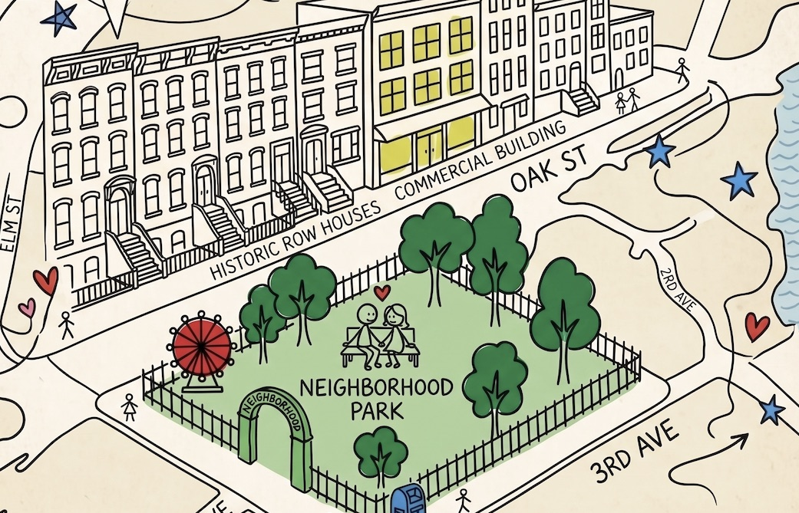

Collide is a hand-drawn map of what's actually worth doing in your city — casual plans, small communities, and the people you keep running into.
already on Collide? same door — sign in

No algorithm, no infinite scroll. Real spots and live plans, inked onto one map of your city — dropped by people who actually go.
Casual plans you can join tonight — a hike, 3am dumplings, a stoop show. RSVP with one tap. Hosted by small communities, not brands.
Keep the people you collide with. Add them to your circle, yap what you're up to, and turn one good night into a habit.
Small crews with a thing — run clubs, painters, zine folks. Each one lives on the map with its own spots.
Up next is always stocked. Say you're in, show up, that's the whole move.
Add who you meet to your circle. Next time they yap a plan, you're the first to know.
"Be the one with something to look forward to."